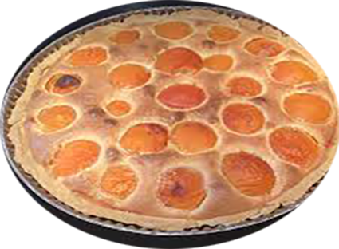

Tarte Abricots

Pour 6 personnes
Préparation : 20 mn
Cuisson :25 à 30 mn
Ingrédients
- 1 pâte sablée
- 1 boîte oreillons d'abricots
- 20 cl de crème fraîche liquide
- 3 œufs entiers
- 1 c. à soupe de sucre en poudre
- 1 sachet de sucre vanillé
Recette
- Préchauffez le four à 180°;
- Déroulez la pâte sablée dans un moule à tarte recouvert de papier sulfurisé;
- Piquet le fond avec une fourchette;
- Égouttez les oreillons d'abricots et répartissez-les sur la pâte sablée dans le moule à tarte;
- Battez les œufs entiers avec la crème liquide, le sucre en poudre et le sucre vanillé dans un bol;
- Versez le mélange sur les oreillons d'abricots;
- Enfournez et faites cuire la tarte pendant 30 à 35 mn environ;
- A la sortie du four, laissez tiédir la tarte avant de démouler sur un plat de service;
|